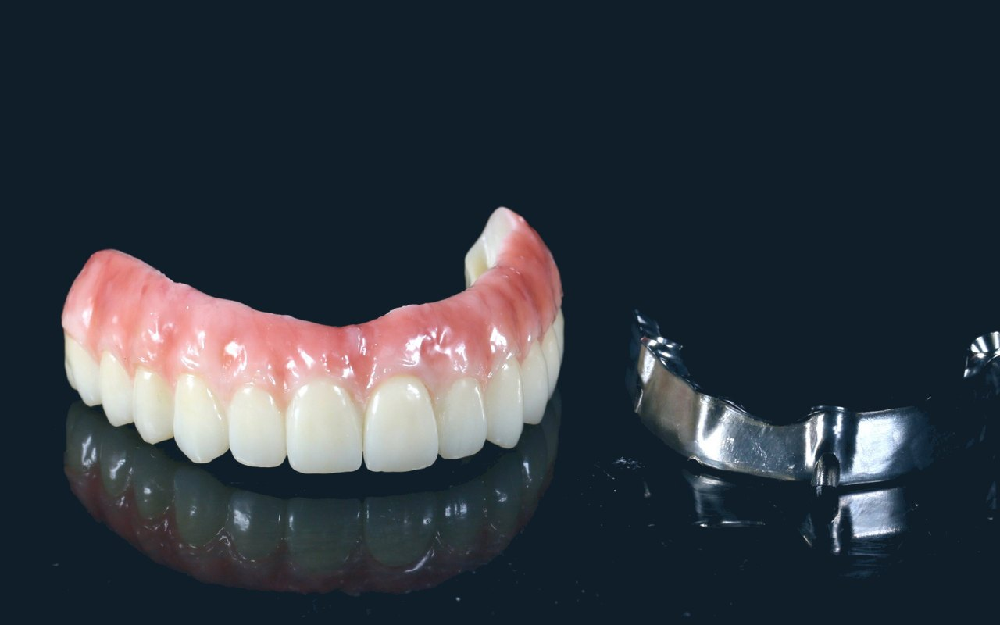

Full-mouth reconstructie
Versleten gebit en veranderingen van de verticale dimensie, gepland als één occlusie.
Digitaal tandtechnisch lab, opgericht door een tandarts. Ontwerp en precisieproductie van restauraties in zirkonia en lithiumdisilicaat, implantaatrestauraties, boormallen en occlusale spalken, geleverd onder de naam van uw lab.

Nettoprijzen in euro, exclusief btw en invoerkosten. Verzending tegen kostprijs, per pakket; meerdere cases kunnen samen mee.
Geproduceerd in China. Het werk blijft onder uw naam, en uw tandartsen blijven uw klanten.

Monolithisch zirkonia, ontworpen door ons team of gemaakt op basis van uw ontwerp.

Individueel gekleurd zirkonia, lithiumdisilicaat en IPS e.max.

Zirkonia op Ti-base, verschroefd of gecementeerd.

Van één implantaat tot een volledige kaak, gepland op de CBCT en de scan. De chirurg keurt de planning goed voordat wij die exporteren of printen. Ontwerpbestand in 2–3 werkdagen; hulzen, indien nodig, tegen kostprijs.

Michigan-stabilisatiespalken, repositioneringsspalken en anterieure deprogrammers, gemaakt volgens de voorgeschreven beet of kaakpositie.
Eerst samen met u gepland, daarna door hetzelfde team ontworpen en gemaakt.
Offerte per case.
Versleten gebit en veranderingen van de verticale dimensie, gepland als één occlusie.

Van boorgeleider en provisorium tot de definitieve prothese.

Beeldgestuurde planning voor rehabilitaties waarbij het kaakgewricht meespeelt.
Meer over AxisGuideStuur één case en beoordeel het resultaat op uw eigen werkbank.

Scan met uw telefoon om ons via WhatsApp te berichten.
Ontwerp, frezen, kleuren en glazuren. Ti-bases, verzending, douanerechten en belastingen staan apart in de offerte.
Ja. Wij sturen u het ontwerp ter goedkeuring voordat we frezen.
Ze worden in China geproduceerd. De restauratie gaat de deur uit onder de naam van uw lab.
Ja. Alleen ontwerp (METALAB), zoals smile design of een diagnostische wax-up, is mogelijk op aanvraag.
Stuur de bestanden zonder de naam van de patiënt, met een casenummer. Voor grote bestanden, zoals een CBCT, werkt een downloadlink het best.